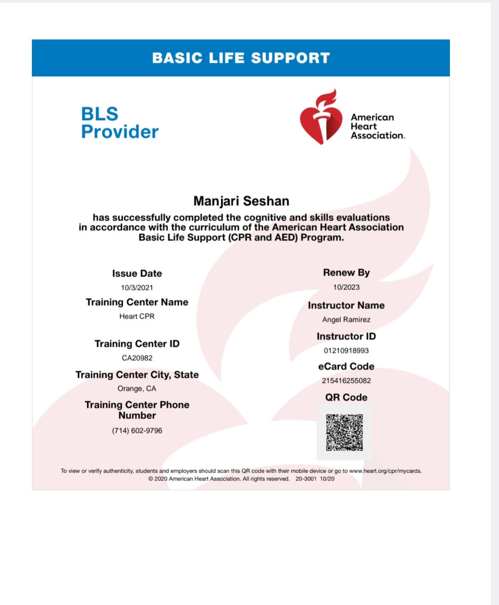
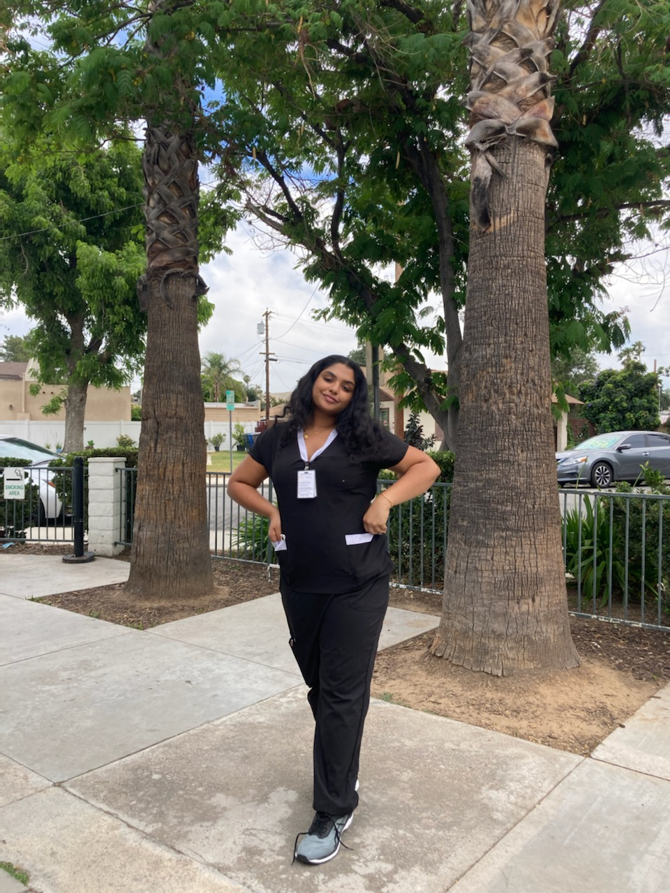

Manjari Seshan
I am a current third-year neuroscience major attending the University of California Riverside wishing to pursue a career in the health field, aspiring to become a doctor.
My experiences within the health care atmosphere consist of partaking in roles of a certified nursing assistant, medichal technician, scribing as well as volunteer opportunities that work with the disbursement of health care essential supplies.
My professional work experience consists of multiple job experiences that deal with customer service, patient care and a multitude of experiences
that help build, technical skills inclusive of using tehcnical medical software, patient care, use of sterilizing equipment and creating events and tasks to engage in a variety of age populations.
Other professional experience includes participating in research that directly involves communication skills and interpreting data into lengthy research papers which include lab technical skills as well as critical thinking and analytical processes.
My current professional experience consists of working at a short term care facility to help patients with total care and adapt to each patient's condition. My role as a CNA is to provide any form of basic care to patients depending on their needs,
for example: collecting stool samples, providing medications,providing toiletry items, feeding, essentially providing patients with care of all necessary platforms with their preexisiting conditions. The facility is mainly
concerned with PT and OT therapy care for falls, injuries and rehabilitation for all age-ranges.My role also consists of techniques with communication directly with patients families as well as patients themselves and monitoring patients health as much as possible to ensure that they are
in healthy living conditions as well as getting proper care.My experience within this professional realm has been intriguing to me as it has helped me develop skills in communication, adapting to multitude of different personalities, situations regarding high risk life scenarios and concerning health conditions.
This professional experience has been eye-opening about the health care industry, including emotional experiences as well as teaching how to handle high priority stress environments within patient care settings.Within this professional setting I am able to get access to clinical experiences, and patient one on one
care with patient’s emotional, physical and overall well being. Time management is a major learning tool used at the workplace as well as observational and qualitative analysis.
Another aspect of my current professional experience is that of an academic nature, from which I participate in academic research, concerning the alzheimers and parkinson's treatment and preventative care.
I work with guantitative data at the university level within a research cohort to gather information about gene therapy methods and mitigation techniques that help with analysis of early onstage symptoms of each disorder and disease.
Experience
Certified Nursing Assisant
• Patient care at a healthcare center
• Communicated with patients families and patients about needs
• Medical technology care
Covid-19 Contact Tracer
• Ran questionaires for patients that showed covid-19 symptoms
• Reported results and analysed symptoms
• Created plans for each covid-19 case
Education
UC Riverside
Portfolio

